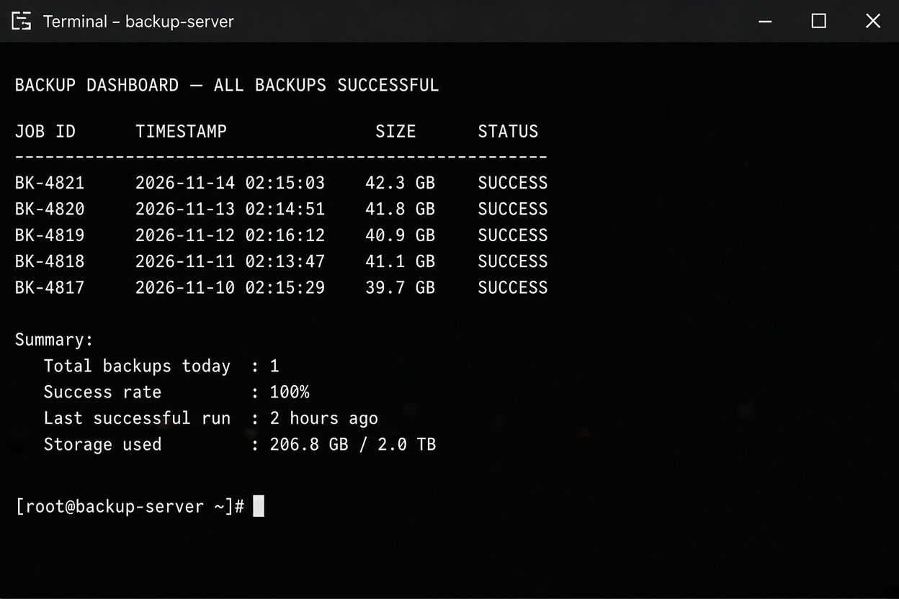

NAME
backup
automated backups, so I never lose data again
DESCRIPTION
Losing important data is a nightmare, so I built an automated backup system to keep my files safe. It uses Rsync on Linux and Task Scheduler on Windows to create regular backups of critical data.
Here's how I set it up.

COMPONENTS
- Cross-platform
- Works on both Linux and Windows systems.
- Incremental
- Rsync backs up only what changed, saving time and storage.
- Scheduled
- Cron (Linux) and Task Scheduler (Windows) run the backups automatically.
- Encrypted
- Backups are secured with AES-256 encryption.
SETUP
Rsync on Linux
I started with Rsync on my Linux machine:
- Install Rsync with the package manager:
$ sudo apt install rsync
- Create a backup script to automate the process.

Task Scheduler on Windows
On my Windows machine, I used Task Scheduler to automate the backups:
- Install Rsync for Windows using Cygwin.
- Create a batch script to run Rsync.
- Set up a scheduled task in Task Scheduler to run the script daily.

Encryption
To secure the backups, I added AES-256 encryption:
- Use OpenSSL to encrypt the backup files.
- Add the encryption step to the backup scripts.
- Store the encryption key securely in a password manager.

Testing
Finally, I tested the system to make sure everything worked as expected:
- Run the backup scripts manually to verify they work.
- Check the backup logs for errors.
- Restore a few files from the backup to confirm data integrity.
SEE ALSO
- hasan-projects(7)
- All my projects.
- homelab(7)
- My home lab setup.
- hasan(1)
- About me, and how to reach me.
(END)